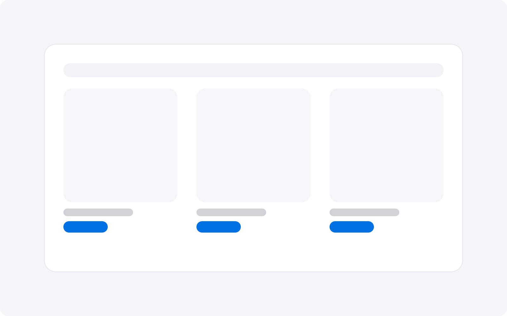
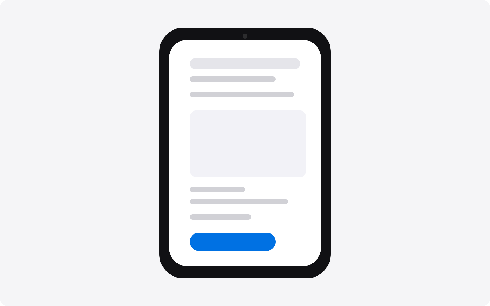

Présentation du jeu
Super Metroid (SNES, 1994) est une référence du jeu d’exploration 2D. Le jeu repose sur des animations lisibles, des déplacements précis et une direction artistique forte malgré les contraintes techniques de l’époque.
C’est précisément ce cadre rétro qui m’intéressait : conserver la lisibilité d’origine, tout en remplaçant entièrement l’identité visuelle du personnage principal.

Contexte modding
Le projet s’inscrit dans l’écosystème des mods de Super Metroid : ROM hacks, VARIA Randomizer et Map Rando.
- ROM hacks : modification de contenu ou de gameplay
- VARIA Randomizer : randomisation des objets et de la progression
- Map Rando : randomisation de la structure des zones
Dans ce contexte, un sprite custom doit rester lisible dans des parcours imprévisibles et rapides.

Ce que j’ai réalisé
J’ai recréé l’ensemble des sprites du personnage de base (Samus) pour plusieurs variantes :
- Sans (Undertale)
- Inkling Girl (Splatoon)
- Samus Maid (variante stylisée)
Le travail couvre les poses principales (idle, course, saut, visée, tirs, morphball, shinespark, etc.) avec adaptation des animations pour conserver le rythme du jeu original.
L’objectif n’était pas de modifier une partie du personnage : j’ai remplacé l’intégralité des animations de Samus pour chaque variante.
Au total, le projet représente 582 sprites remplacés et ajustés.

Contraintes techniques SNES
Le design devait respecter des limites strictes liées à la console :
- Taille des sprites et découpage en tiles
- Palette limitée à 16 couleurs dont 1 transparente (donc 15 couleurs visibles)
- Aucune animation ajoutable : il faut respecter strictement les slots vanilla (ex : 4 frames idle, 8 frames course, 1 frame shinespark)
- Lisibilité immédiate sur des animations courtes
- Cohérence visuelle entre toutes les frames d’action
Ce cadre impose des choix de simplification précis : silhouette, contraste et timing priment sur le détail décoratif.
Palettes des suits
Super Metroid applique des variations de couleurs selon les suits. Pour rester cohérent avec le jeu, j’ai travaillé avec des palettes dédiées Power, Varia et Gravity.
La palette ci-dessous montre les couleurs utilisées pour les 3 suits (hors pixel transparent), suivie de la référence visuelle des 3 versions originales de Samus.


Pipeline de création (Aseprite)
J’ai utilisé Aseprite pour produire les sprites frame par frame, en m’appuyant sur des références de chaque univers afin de garder l’identité du personnage tout en respectant la grammaire visuelle de Super Metroid.
- Construction des key poses puis in-between
- Vérification en boucle dans le rythme réel du jeu
- Palette et teintes custom selon chaque suit : Power Suit, Varia Suit, Gravity Suit
- Ajustements d’échelle pour coller au gabarit de Samus dans Super Metroid (ex : Sans est petit dans son jeu d’origine, mais son sprite de combat est trop grand pour être repris tel quel)
- Ajustements palette pour garder la lisibilité en mouvement

Exemples d’adaptation créative
- Pour Inkling Girl, j’ai utilisé l’idée de transformation humanoïde / calamar pour la morphball
- Pour certaines séquences rapides, j’ai réinterprété le shinespark avec une forme inspirée du Kraken
- Sur Sans, le canon de Samus est remplacé par un Gaster Blaster et certaines attaques de shinespark sont adaptées avec des visuels d’os
- J’ai retravaillé les poses pour conserver lisibilité et personnalité en pixel art
Ce que ce projet m’a apporté
Ce travail m’a appris à designer dans un cadre très contraint sans perdre la créativité. Modder un jeu existant m’a fait progresser sur :
- L’analyse d’animations existantes et leur reconstruction
- La maîtrise des contraintes techniques rétro (palette, taille, lisibilité)
- La cohérence artistique entre univers différents
- La précision d’exécution frame par frame